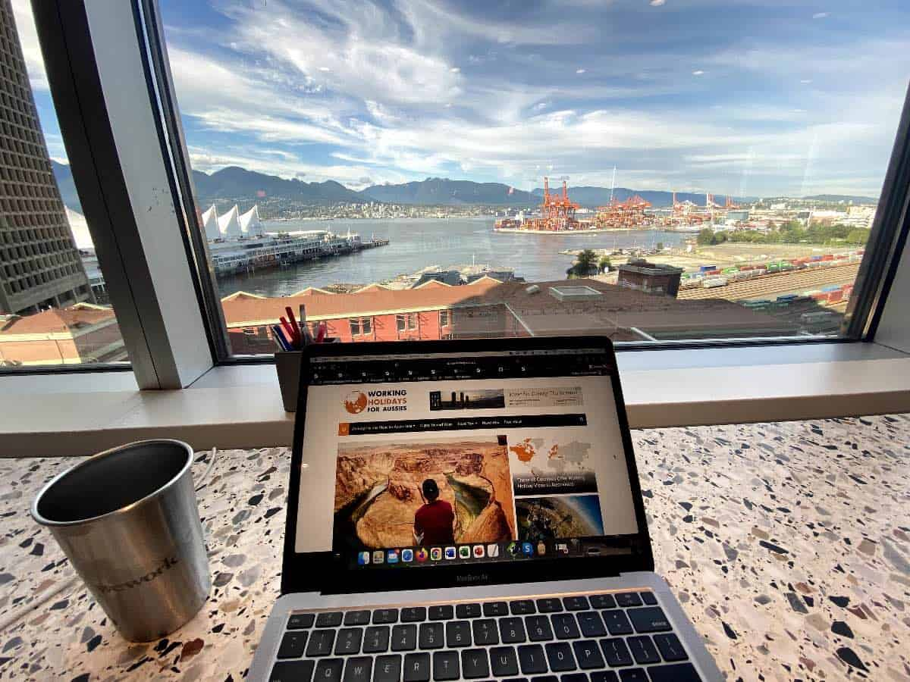
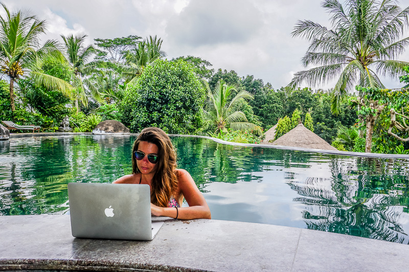

Remote work + exploration. Cheap live, stay productive, build useful tools, and explore the world safely. Here’s your full digital nomad blueprint..
Over 40 million digital nomads globally. 4-day workweeks, $400 flights, and 100+ countries with nomad visas. The future of work is location-independent — and 2025 is the peak. Companies offer “work-from-anywhere” policies. Cities compete with coworking hubs and $2 lunches. Social media fuels the lifestyle — #DigitalNomad has 2.1M posts on X. Whether escaping winter or chasing lower costs, the nomad life is now mainstream.

These cities combine affordability, fast internet, coworking culture, and AI-ready exploration:
Chiang Mai offers $300 hostels, $2 pad thai, and 50+ coworking spaces. Visa: 60 days on arrival, extendable.
Lisbon’s D7 visa allows 1-year stays with €820/month income proof. Work from Time Out Market. Fast internet (200 Mbps average) and a thriving startup scene.
Medellín’s “eternal spring” weather and $250 apartments make it a budget king. Coworking at Selina or WeWork.
Ubud blends coworking (Hubud, $10/day) with wellness. Breakfast for $2. Visit Tegalalang Rice Terrace. Visa: 60 days, B211A for longer.

Tbilisi offers $200 apartments, $3 khachapuri, and 1-year visa-free entry for 100+ nationalities. Coworking at Impact Hub. Visit the Old Town and sulfur baths. Work in a wine bar with 50 Mbps, or Soviet-era cafés also are perfect for deep work.
Balance productivity and exploration with this proven schedule:
These tools keep you productive, connected, and exploring:
Notion replaces 5 apps: notes, calendar, database, and travel itinerary. Create a “Nomad Base” with city guides, visa trackers, and AI route links. Syncs offline.
Revolut lets you hold 30+ currencies and spend locally without 5% bank fees. Pay for a ฿50 meal in Chiang Mai or €3 coffee in Lisbon at interbank rates. Withdraw $200/month free.
Citymapper shows real-time buses, trains, and scooters in Lisbon or Medellín. Combine with AI walking routes for hybrid commutes: metro → 10-min walk to coworking.
Meetup connects you to weekly events: “Digital Nomads Chiang Mai” or “Lisbon Remote Workers”. Turn solo travel into a community in one tap.
WhatsApp is the global standard for nomad communication. Share your live location with a friend during a late-night walk. Works on 2G if needed.
While you focus on deep work and sunset views, Tourist Guide AI quietly handles the rest — turning “Where next?” into a plan that fits your budget and schedule.
Curious how I built this? Read “How I Built Tourist Guide AI in 4 Months as a Solo Indie Hacker”